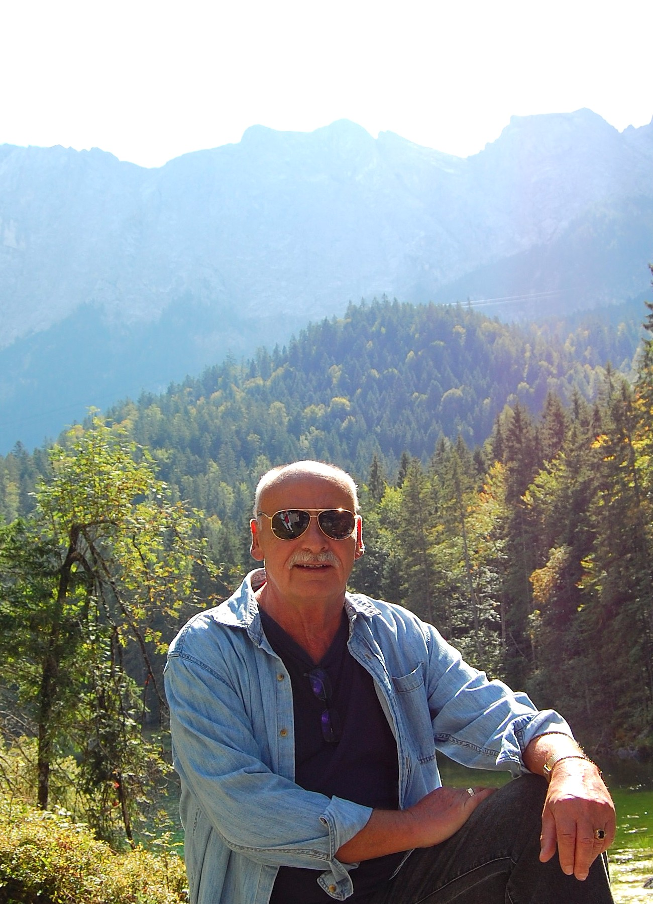

About the Author
Biography
A life lived with curiosity and good humour

Peter Koch
September 2014 · Bavaria
Peter Koch
Born 1946, Wrescherode, Germany
Peter Koch was born in the spring of 1946 in a small town in the Harz Mountains in the north of Germany as the third oldest of four children.
The family moved from the Harz Mountains to the city of Frankfurt a.M., where Peter then later on attended the Freiherr vom Stein school. There he was greatly inspired by a teacher who had travelled extensively in South America. Peter would develop his need for adventure and seek out books on emigration to other continents early on.
Peter married young and, to support his family, joined the German Air Force in the 1960s. His long military career spanning over 30 years allowed him and his family to live in Belgium, in Egypt and later on in the United States.
Peter was married to his Suzanne for over forty years and has two adult children, each of whom where told bedtime stories that they still cherish.
Peter had a writing desk as a student where he would sit down and write his first stories. He was encouraged by his family to stop keeping all these stories you see here to himself. What follows on this site is the result — a collection assembled over time. We hope you enjoy them as much as we do.
"A story doesn't need to be long to be worth hearing. It only needs to be true — or close enough to truth that it tells you something real."